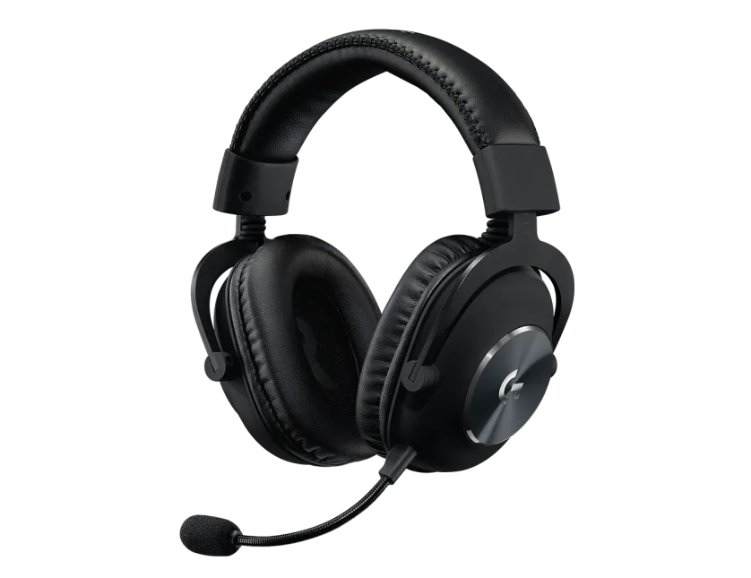
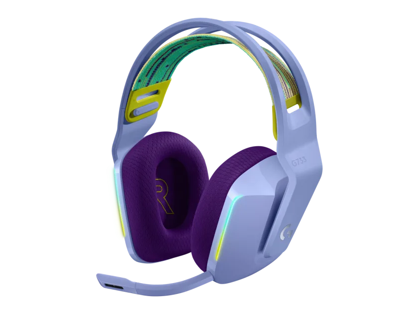

La tecnología inalámbrica LIGHTSPEED, únicamente de Logitech G, te permite jugar sin cables y sin compromisos en latencia, conectividad o batería. Juega en total libertad con más de 20 horas de batería y un radio de acción de 15 metros utilizando la robusta frecuencia de 2,4 GHz.La tecnología de micrófono BLUE VO!CE te da la opción de elegir filtros de voz en tiempo real. Reduce el ruido, añade compresión y elimina el siseo. Y garantiza además que tu voz suene más rica, limpia y profesional. Obtén comunicaciones de voz dentro del juego personalizables, con calidad de estudio, con BLUE VO!CE a través del software para juegos G.

Alrededor de 16,8 millones de colores, dos zonas para personalizar la iluminación y hacerla completamente tuya. Elige tus colores, visualiza tu audio, intégrate en tu mundo de juego, o enloquece con las animaciones predefinidas o crea las tuyas propias. Prográmalo todo con el software gratuito para juegos G HUB.Escúchalo todo con nuestros propios transductores PRO-G diseñados para ofrecer un sonido preciso y de gama completa. Sumérgete en el juego más que nunca con el sonido envolvente de próxima generación DTS Headphone:X 2.0.3Funciones avanzadas como DTS Headphone:X 2.0, Blue VO!CE RGB LIGHTSYNC no están disponibles en PlayStation 4. Suena increíble y nítido, con el micrófono con certificación para Discord.